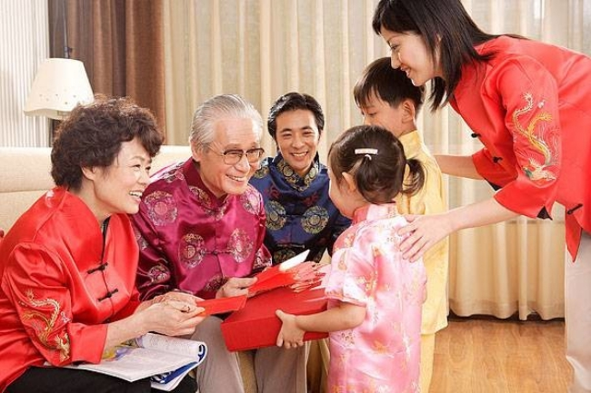
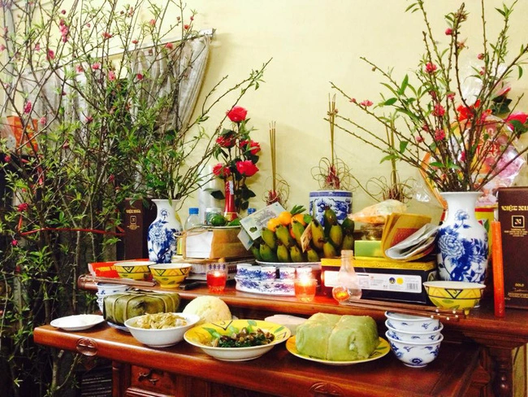

🌸 BÁO TƯỜNG ĐIỆN TỬ – MỪNG XUÂN 🌸
Các Phong Tục Truyền Thống
- Cúng ông công ông táo:Vào ngày 23 tháng Chạp, các gia đình dọn dẹp bàn thờ và làm lễ cúng ông công ông táo chầu trời. Đây là phong tục thể hiện lòng thành kính với các vị thần bếp núc những người chứng giám việc gia đình suốt cả năm.
- Gói Bánh Chưng, Bánh Tét: Bánh chưng bánh tét tượng trưng cho đất, được gọi từ gạo nếp đậu xanh thịt lợn và lá dong hoặc lá chuối.Quá trình gói và nấu bánh chưng thường diễn ra vào những ngày giáp Tết, là dịp để các thành viên trong gia đình quây quần bên nhau, cùng trò chuyện và chờ nồi bánh sôi suốt nhiều giờ. Vì thế, bánh chưng không chỉ là món ăn mà còn là biểu tượng của sự sum họp, ấm no và truyền thống gia đình.Ngày nay, dù cuộc sống hiện đại thay đổi nhiều, bánh chưng vẫn giữ vị trí không thể thiếu trên bàn thờ tổ tiên mỗi dịp Tết, như một cách gìn giữ và tôn vinh bản sắc văn hóa Việt Nam.
- Cúng tất niên Một lễ nghi vô cùng quan trọng diễn ra trong các ngày trước tết đó là làm cơm cúng tất niên. Vào ngày này các gia đình người Việt thường làm mâm cơm tươm tấp thắp hương mời thần linh cùng gia tiên về ăn tết với gia đình, kết thúc một năm cũ và chào đón năm mới đến.Sau lễ cúng, các thành viên trong gia đình quây quần bên nhau dùng bữa tất niên, cùng nhìn lại những việc đã qua trong năm cũ, chia sẻ niềm vui, nỗi buồn và gửi đến nhau những lời chúc tốt đẹp. Vì thế, cúng tất niên không chỉ mang ý nghĩa tâm linh mà còn thể hiện sự sum họp, gắn kết gia đình.
- Phát lì xì: trong những ngày đầu năm con cháu đến thăm hỏi chúc tết ông bà cha mẹ và người thân trong gia đình người lớn sẽ tặng cho trẻ em những phong bao lì xì đỏ với lời chúc may mắn tượng trưng cho sự thịnh vượng và tài lộc trong năm mới.Ngày nay, tục lì xì cũng được mở rộng để thể hiện sự chúc Tết, động viên giữa bạn bè, đồng nghiệp.Giá trị của tiền lì xì không nằm ở số tiền nhiều hay ít mà quan trọng nhất là ý nghĩa tinh thần: gửi gắm lời chúc, niềm vui và hy vọng cho một năm mới thuận lợi. Với trẻ em, lì xì còn là niềm vui đầu năm; với người lớn, đó là cách gìn giữ truyền thống và lan tỏa sự gắn kết trong gia đình, xã hội.
Góc Ảnh



